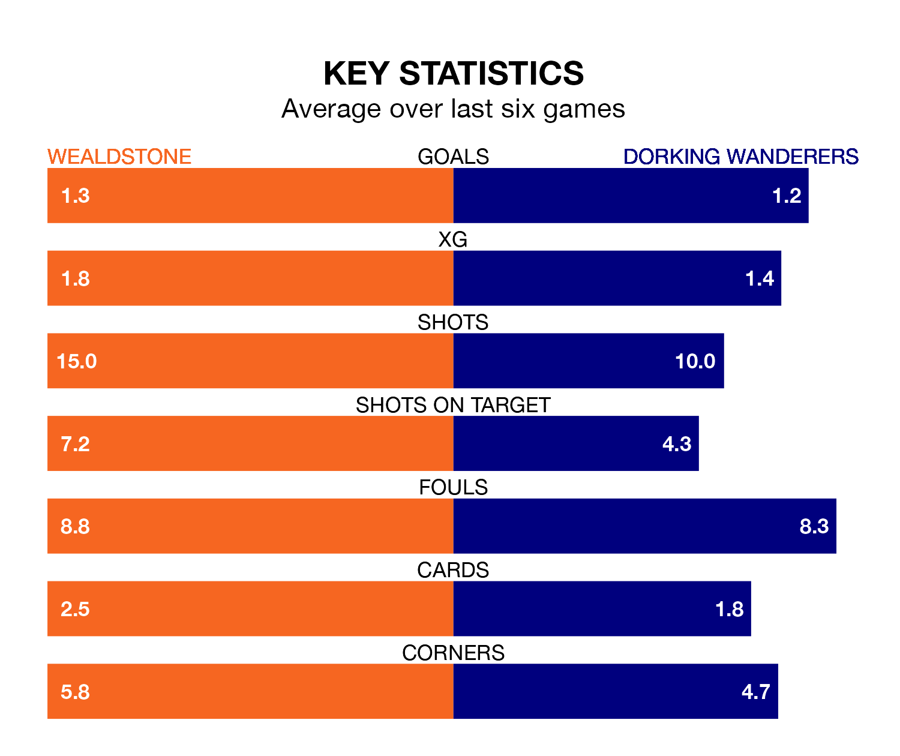

Dorking Wanderers travel to Wealdstone on late Tuesday in the National League.
The visitors come into the game on the back of a draw in their last match, having tied with Kidderminster Harriers 0-0 away.
Wealdstone, meanwhile, lost their last match, 4-2 against Gateshead, with their goals scored by Jaydn Josiah Mundle-Smith and Tarryn Allarakhia.
Dorking are 20th in the table after 33 games, of which they have won 11 and drawn five, earning 38 points.
Wealdstone are three places ahead of Wanderers in 17th, with 10 wins and eight draws putting them on the same number of points.
The hosts are in disappointing form in the National League, with one win and two draws from their last six games.
With two wins and a draw over that period, the away team's form is slightly better – they have taken seven points from 18, compared to Wealdstone's five.
In the last five years, Wealdstone and Dorking have played each other on five occasions. Wealdstone won one of them, Dorking two, and they drew twice.
On average, Wealdstone scored 1.8 goals and Wanderers 2.2 in those matches.
Their last meeting was on September 19, when Dorking won 3-1 at home.
With 38 goals in 33 games so far this season, Dorking are scoring at below the league average rate with 1.2 goals per game. And they are conceding more than average, letting in 53 goals at a rate of 1.6 per game.
Wealdstone are also below average scorers, with 1.4 goals per game, compared to a league average of 1.5. They have conceded 1.5 goals per game.
Updated: 12:18 (UTC), 19/02/24